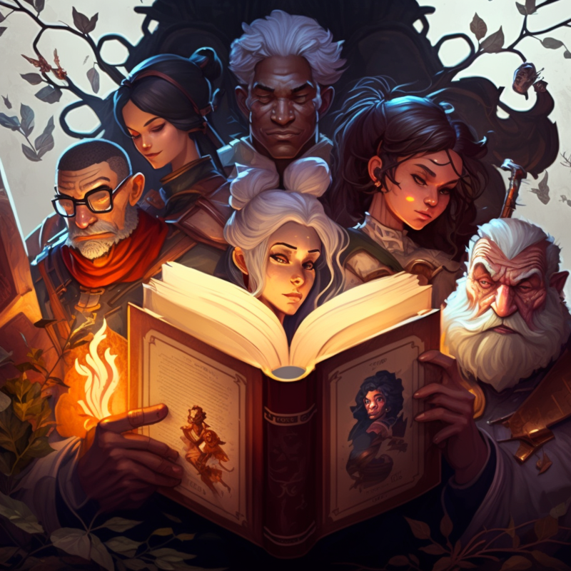

The Ultimate Character Creation Guide for Fantasy Writers and RPG Players
Introduction
Crafting a compelling character is a cornerstone of storytelling, whether you're writing a novel, developing a role-playing game, or creating a screenplay. A well-rounded, memorable character has the power to captivate your audience and transport them into the world you've built. By taking the time to develop a character that feels alive and real, you can create a more engaging, immersive experience for your readers or players. In this guide, we'll walk you through the essential steps of character creation, from conceptualization to development. We'll explore the various components that make up a compelling character, including their background, personality, physical appearance, goals, and relationships with other characters. We'll also delve into the importance of character arcs, conflicts, and growth over time, all of which contribute to the depth and believability of your character. Whether you're a seasoned writer or a newcomer to storytelling, this guide aims to equip you with the tools and insights necessary to bring your characters to life. By following the advice and exercises outlined here, you can create characters that resonate with your audience and leave a lasting impression. Remember, character creation is a journey full of exploration, trial and error, and creative discovery. Embrace the process, learn from your experiences, and most importantly, enjoy the adventure of crafting unforgettable characters that will captivate your readers or players.
Why Character Development Matters
Character development is crucial to storytelling because it brings your narrative to life and helps your audience connect with your characters on a deeper level. By investing time and effort into developing rich, multidimensional characters, you can create a more immersive and enjoyable experience for your readers or players. Here are some reasons why character development matters:
- Emotional investment: Well-developed characters evoke emotions in your audience, whether it's sympathy, love, hatred, or admiration. This emotional investment keeps your audience engaged and invested in the story, rooting for or against your characters.
- Relatability: Characters with depth and complexity are more relatable, allowing your audience to see themselves in their struggles, desires, and triumphs. This connection helps your readers or players become more immersed in the story and care about the outcomes.
- Realism: Fleshed-out characters with distinct personalities, backgrounds, and motivations make your fictional world feel more realistic and believable. The more your characters resemble real people, the easier it is for your audience to suspend their disbelief and become lost in your story or game.
- Dynamic storytelling: Characters that grow and change over time create dynamic, engaging narratives. Character development adds depth to your story, as characters face challenges, overcome obstacles, and evolve in response to their experiences.
- Conflict and tension: Well-developed characters often have conflicting goals, desires, or beliefs, which can generate tension and conflict within your narrative. This conflict drives the story forward and keeps your audience eager to know what happens next.
- Memorability: Memorable characters leave a lasting impression on your audience, making your story or game more enjoyable and impactful. By creating unique, fully-realized characters, you can craft an unforgettable narrative that resonates with your readers or players long after they've finished.
By understanding the importance of character development and putting it into practice, you can create more engaging, meaningful stories or games that captivate your audience and stand the test of time.
Step 2: Background and Origins
Once you have a basic concept, think about your character's background and origins. This will provide a foundation for their personality, motivations, and actions. Consider:
- Place of birth and upbringing
- Family and social status
- Key events or experiences that shaped them
Step 3: Personality and Traits
Now, delve into your character's personality and traits. This will help you understand how they think, feel, and interact with the world. Consider:
- Core values and beliefs
- Strengths and weaknesses
- Fears and desires
- Likes and dislikes
Step 4: Physical Appearance
Describe your character's physical appearance. This will help your readers or players visualize them and make them more relatable. Consider:
- Height, build, and posture
- Hair, eye, and skin color
- Clothing and accessories
- Unique features or markings
Step 5: Goals and Motivations
Every character needs goals and motivations that drive their actions. This will help create a sense of purpose and direction in your story or game. Consider:
- Short-term and long-term goals
- Personal or external motivations
- Conflicts or obstacles they must overcome
Step 6: Relationships and Connections
Your character's relationships with other characters are crucial to their development and the overall narrative. Think about how your character interacts with others and the connections they have. Consider:
- Family members, friends, and allies
- Enemies, rivals, and adversaries
- Romantic interests or partners
- Mentors, protégés, or followers
Step 7: Character Arc and Development
Finally, consider how your character will grow and change throughout the story or game. This will help you create a dynamic, engaging character that evolves with the narrative. Consider:
- How their goals and motivations may shift
- Lessons they learn or experiences that change them
- How their relationships with other characters may evolve
Conclusion
With this guide, you're well on your way to creating a rich, multidimensional character that will captivate your readers or players. Remember, character creation is an iterative process, and it's okay to make changes as you go. Take your time, be open to exploration, and most importantly, have fun!